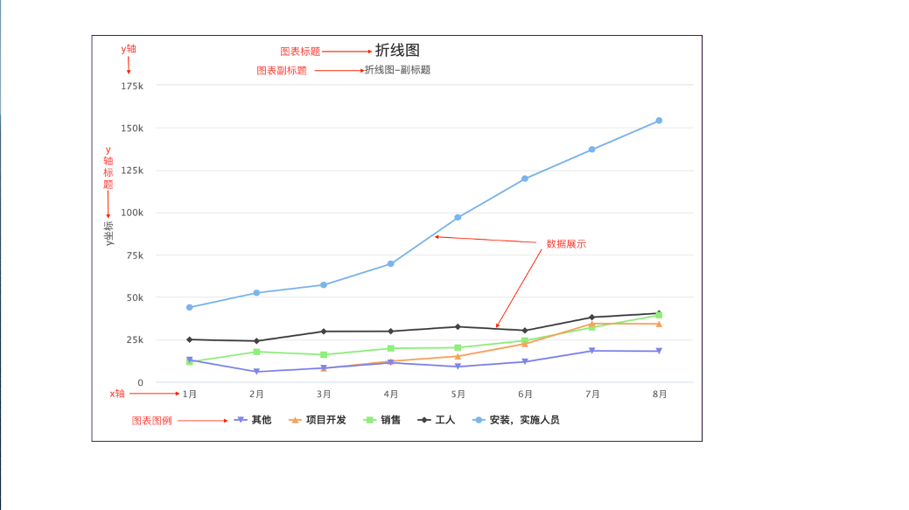

HChart数据图表
基础教程：https://www.highcharts.com.cn/docs
图表基本组成：

设计属性
对象名称
类型：字符串；
值：
说明：自定义控件对象名；
图表类型
类型：下拉选列表；
值：
说明：部分图表（柱状图、散点/气泡图、3D图）可以设置图表类型；
图表标题
类型：字符串；
说明：设置图表的主标题；
图表副标题
类型：字符串；
说明：设置图表的副标题；
项目成员
类型：字符串；
说明：设置数据源属性值在表单数据上下文对象中的键名；
无数据显示文字
类型：字符串；
说明：设置在无数据时显示的文本；
显示图例
类型：（单选框）；
说明：是否显示图例；
图例位置
类型：（下拉选列表）；
说明：设置图例在图表控件中显示的位置；
数据标签
类型：（单选框）；
说明：设置是否显示数据标签；
事件处理程序
LegendClick
- 调用时机：点击图例标签时；
- 说明：可在此事件中获取到点击的图例对应的数据对象ClickedLegendDataContext；
- 备注：
SerieClick
- 调用时机：点击图表序列时；
- 说明：可在此事件中获取到点击的图例对应的数据对象ClickedSerieDataContext；
- 备注：
属性、方法
Chart-属性，获取图表对象；
- 说明：对象，图表对象，可以直接操作数据图表添加、删除数据，刷新显示等操作；属性和方法见表1、图表对象Chart属性、方法；
- 示例：
//HChart为数据图表控件对象； var chart = HChart.Chart;
DataSource-设置显示数据源；
- 说明：对象，DataSource对象，详细数据格式见使用说明文档；
- 示例：
//HChart为数据图表控件对象 HChart.DataSource = {}
ClickedLegendDataContext-获取点击图例的数据对象；
- 说明：数据类型为对象，格式为给定的数据格式；
- 示例：
//HChart为数据图表控件对象 var data = HChart.ClickedLegendDataContext;
ClickedSerieDataContext-获取点击序列的数据对象；
- 说明：
- 示例：
//HChart为数据图表控件对象 var data = HChart.ClickedSerieDataContext;
图表对象Chart属性、方法
addSeries(options, redraw, animation)-添加数据列
- 说明：方法，在图表渲染完毕后对图表进行新增数据列操作。 参数：options-数据列配置对象；redraw-添加完数据列后是否重绘图表，默认为true；animation-默认为true，添加数据列是否包含默认的动画效果；
- 示例：
//Chart为图表对象，通过HChart.Chart获取； Chart.addSeries({});
redraw()-重绘；
- 说明：当图表的数据、坐标轴等有更新是时，调用此方法可以对图表进行重新绘制操作。
- 示例：
//Chart为图表对象，通过HChart.Chart获取； Chart.redraw()
reflow()-重新适应；
- 说明：让图表自适应图表容器。
- 示例：
//Chart为图表对象，通过HChart.Chart获取； Chart.reflow()
update(options, redraw)-更新；
- 说明：通用的图表更新函数（可以更新任意图表元素）；参数：options-更新的配置对象；redraw-是否在更新图表后进行重绘操作，默认是 true。
- 示例：
//Chart为图表对象，通过HChart.Chart获取； Chart.update({}，true);
showLoading(str)-显示加载中效果
- 说明：方法； 参数：参数str-字符串，指定显示的文字；
- 示例：
//Chart为图表对象，通过HChart.Chart获取； Chart.showLoading('正在加载，请稍候……');
hideLoading ()-隐藏加载中效果；
- 说明：
- 示例：
//Chart为图表对象，通过HChart.Chart获取； Chart.hideLoading()
series-数据列；
- 说明：图表的数据列对象数组，数据列对象的属性和方法见表2、数据列对象serie属性和方法。
- 示例：
//Chart为图表对象，通过HChart.Chart获取； var series = Chart.series;
数据列对象serie属性、方法
addPoint(options, redraw, shift,animation)-增加数据点
- 说明：方法，在图表渲染完毕后对数据列进行新增点操作。新增的点可以是最后的点，也可以给定 X 值来放置在对应的位置（最开始，中间位置，取决于 x值）。 参数：options-数据列配置对象；redraw-添加完数据列后是否重绘图表，默认为true；animation-默认为true，添加点是否包含默认的动画效果；
- 示例：
//serie为数据列对象； serie.addPoint({});
removePoint(index, redraw, animation)-移除数据点；
- 说明：从数据列中删除点。
- 示例：
//serie为数据列对象； serie.removePoint(1，true,true);
hide()-隐藏数据列；
- 说明：隐藏数据列（只有数据列为显示状态才有效）；
- 示例：
//serie为数据列对象； serie.hide();
show()-显示数据列；
- 说明：显示数据列（只有在数据列隐藏的情况下有效）。
- 示例：
//serie为数据列对象； serie.show();
remove(redraw)-删除数据列
- 说明：从图表中删除数据列； 参数：参数redraw-布尔，是否重绘；
- 示例：
//serie为数据列对象； serie.remove(true);
select(selected)-选中数据列；
- 说明：selected:布尔类型，是否选中；
- 示例：
//serie为数据列对象； serie.select(true);
selected-获取选中状态；
- 说明：只读属性，返回值Boolean类型。
- 示例：
//serie为数据列对象； var selected = serie.selected;
setData(data,redraw,animation,updataPoints)-更新数据；
- 说明：
- 示例：
//serie为数据列对象； serie.setData({});
update(options,redraw)-更新配置
- 说明：options:更新的配置项；redraw：更新后时候重绘，默认true；
- 示例：
//serie为数据列对象； serie.update({});
data-数据；
- 说明：包含数据列所有数据点数组，只读属性。
- 示例：
//serie为数据列对象； var data = serie.data;
chart-图表对象；
- 说明：数据列所在的图表对象，只读属性。
- 示例：
//serie为数据列对象； var chart = serie.chart;
数据源属性DataSource，类型：对象；基础数据结构：
{
//必需!显示数据-数组类型，绘制折线或柱状图的组数由数组元素个数决定；
datas:[{
//图表分组名称
name: '安装，实施人员',
//图表每组数据；某个数据点不绘制时，赋值为null；
data: [43934, 52503, 57177, 69658, 97031, 119931, 137133, 154175]
}, {
name: '工人',
data: [24916, 24064, 29742, 29851, 32490, 30282, 38121, 40434]
}, {
name: '销售',
data: [11744, 17722, 16005, 19771, 20185, 24377, 32147, 39387]
}, {
name: '项目开发',
data: [null, null, 7988, 12169, 15112, 22452, 34400, 34227]
}, {
name: '其他',
data: [12908, 5948, 8105, 11248, 8989, 11816, 18274, 18111]
}],
//可选参数；颜色序列，依次取值，循环使用；不给定则使用默认颜色系;
//默认颜色系：['#7cb5ec', '#434348', '#90ed7d', '#f7a35c', '#8085e9',
//'#f15c80', '#e4d354', '#2b908f', '#f45b5b', '#91e8e1']
colors:["#333","#666","#123"],
//可选参数；图表标题，可以在开发平台设计界面直接设置；
title:"图表标题",
//可选参数；图表副标题，可以在开发平台设计界面直接设置；
subtitle:"副标题",
//x轴显示文本数组；
xLabels:["1月","2月","3月","4月","5月","6月","7月","8月"],
//可选；x轴样式设置
xAxis: {
//横坐标绘制间距
tickInterval: 1,
//轴线颜色
lineColor:"#333",
//轴线宽度
lineWidth:1,
//坐标轴标签样式设置
labels:{
rotation:60,//x轴label旋转角度
style:{
color:"#272d35",//x轴label文字颜色；
"fontSize": "11px",
}
},
},
//y轴标题
yTitle:"y坐标",
//设定图例项的CSS样式。只支持有关文本的CSS样式设定。 默认是：{ "color": "#333333", "cursor": "pointer", "fontSize": "12px", "fontWeight": "bold" }.
legend:{
itemStyle:{
fontSize:"12px"
},
//设定每个图例项的宽度。当图例有很多图例项，并且用户想要这些图例项在同一平面内垂直对齐，此时这个属性可帮用户实现此效果。
itemWidth:"80px",
//图例数据项的布局。布局类型： "horizontal" 或 "vertical" 即水平布局和垂直布局 默认是：horizontal.
layout:'horizontal',
// 图例容器是否可以浮动，当设置为浮动（true）时，图例将不占用绘图区空间，并可以层叠在图形上方。 默认是：false.
floating:false,
},
//可选；数据提示框样式；数据提示框指的当鼠标悬停在某点上时，以框的形式提示该点的数据
//
tooltip: {
//标题格式化
headerFormat: '<span style="font-size:11px">{series.name}</span><br>',
//数据点格式化字符串
pointFormat: '<span style="color:{point.color}">{point.category}</span>: <b>{point.y}</b> <br/>',
//背景色
backgroundColor:"#272d35",
//边框颜色
borderColor:"#fff",
//边框圆角半径 默认值3
borderRadius:3,
//边框宽度，默认值1
borderWidth:1,
//是否启用数据点提示框。 默认是：true.
enabled: true,
//是否使用HTML代码渲染提示框的内容用以代替SVG。使用HTML允许高级格式化，如在提示框中使用表格和图像。 默认是：false.
useHTML: false,
//数据提示框数据值小数保留位数。可以在每个数据列的 tooltip 对象中针对某个数据列单独设置。默认为保留所有小数。
valueDecimals:"",
},
//可选；数据列配置
plotOptions: {
// 仪表盘图表数据列样式
solidgauge: {
//数据标签样式
dataLabels: {
//是否显示
enabled: true,
//数据标签格式化
formatter:function () {
//this对存储当前数据列的相关信息
//this.percentage-当前数据列占总和的百分比
//this.point-点对象，this.point.name；
//this.series-序列对象，this.series.name;
// this.total-数据总和；
// this.x-x值；
// this.y-y值；
return this.y+"%";
},
//边框宽度
borderWidth:0,
//标签文字样式
style:{
fontSize:"68px",
color:"red",
fontWeight:"bold",
textOutline:"1px 1px contrast",
},
//水平对齐方式；可以用的值有 "left", "center" 或 "right"。
align:"center",
//垂直对齐方式；可以用的值有 "top", "middle" 或 "bottom"。
verticalAlign:"middle",
},
//线两端形状round-圆头、square-方形
linecap: 'square',
stickyTracking: false
}
},
//可选；面板样式设置，只针对仪表盘图表和极地图；
pane: {
//极地图 x 轴或仪表图值轴的结束角度，为角度值，即 0 表示图形的正北方向。默认值为 0。
startAngle: 0,
//极地图 x 轴或仪表图 y 轴（值轴）的结束角度，为角度值，即 0 表示图形的正北方向。默认值是在开始角度（ startAngle）的基础上 + 360度。
endAngle: 360,
// 面板背景相关配置。
background: [{
//面板背景的内、外半径，可以是数值（像素） 或百分比字符串。 默认是：0
outerRadius: '100%',
innerRadius: '88%',
// 面板的背景颜色，可以是 渐变颜色。
backgroundColor: 'red',
// 面板背景边框宽度 默认是：1.
borderWidth: 0
}]
},
}